✦ Mahasiswa PPG Prajabatan 2025
Berasal dari Lampung Utara, kini merantau ke kota istimewa untuk menempa diri menjadi seorang pendidik. Lahir di Jakarta, dibesarkan di tanah Lampung yang kaya budaya, dan kini mengabdikan ilmu informatika melalui Program Profesi Guru di Universitas Negeri Yogyakarta.
"Mendidik bukan sekadar mentransfer pengetahuan, melainkan menyalakan api semangat belajar yang tak pernah padam dalam diri setiap murid."
Tanah Kelahiran Kedua
Lampung Utara adalah kabupaten di Provinsi Lampung dengan ibu kota Kotabumi — sebuah daerah yang kaya warisan budaya, keindahan alam, dan semangat masyarakat yang hangat.
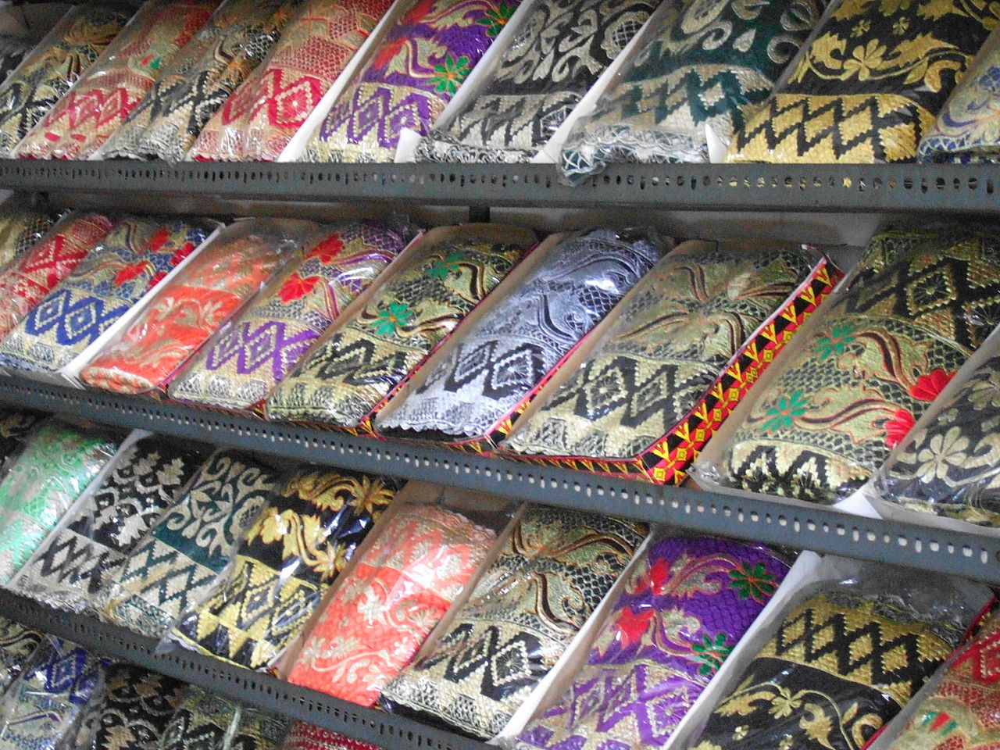
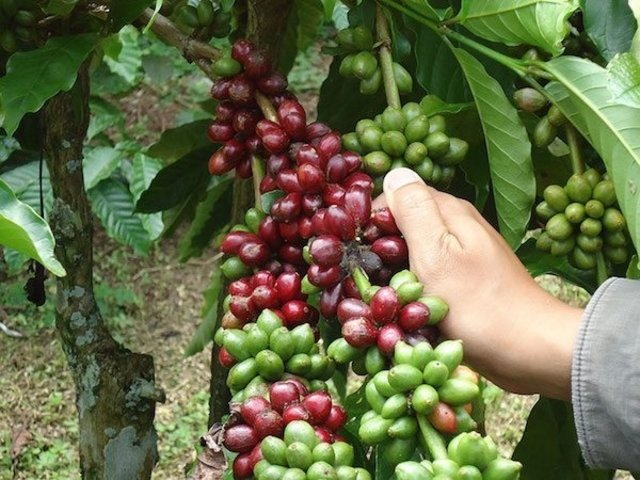
Riwayat Akademik
SMAN 1 Tanjung Raja
Lampung Utara
Lulus 2016
Universitas Teknokrat Indonesia
Informatika
Lulus 2025 · IPK 3.42
Universitas Negeri Yogyakarta
Pendidikan Informatika
Sedang Berjalan · 2025
Dokumentasi Mengajar
Kumpulan momen berharga selama kegiatan praktik mengajar pada PPL 1 di sekolah mitra.
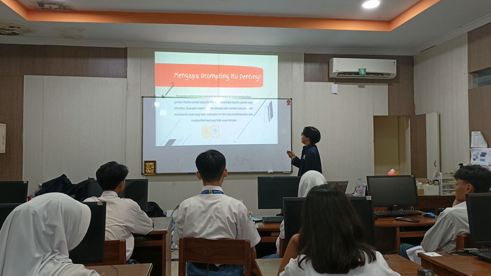
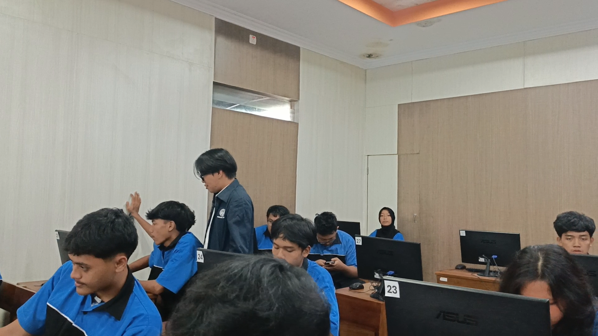
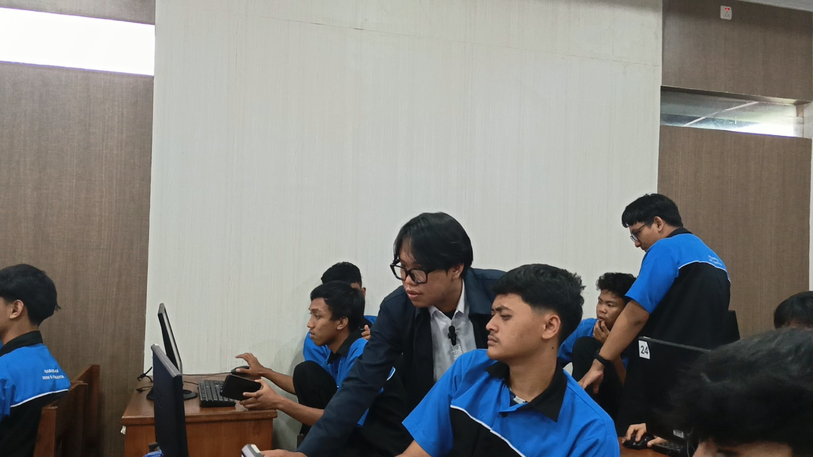
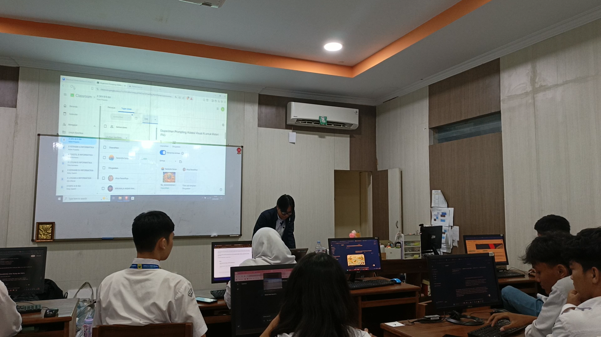
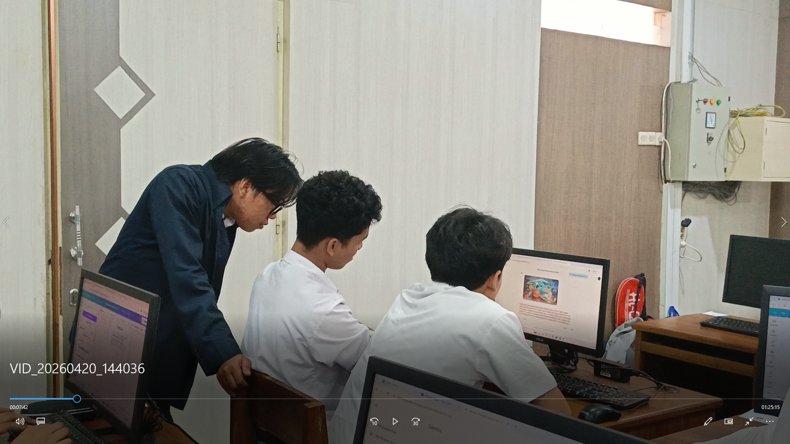
Tempat Belajar & Mengajar
Jl. Colombo No.1, Karang Malang, Yogyakarta
Jl. Kenari No.71, Muja Muju, Yogyakarta
Hubungi Saya
Jangan ragu untuk menghubungi saya melalui berbagai platform di bawah ini.
Portofolio 1
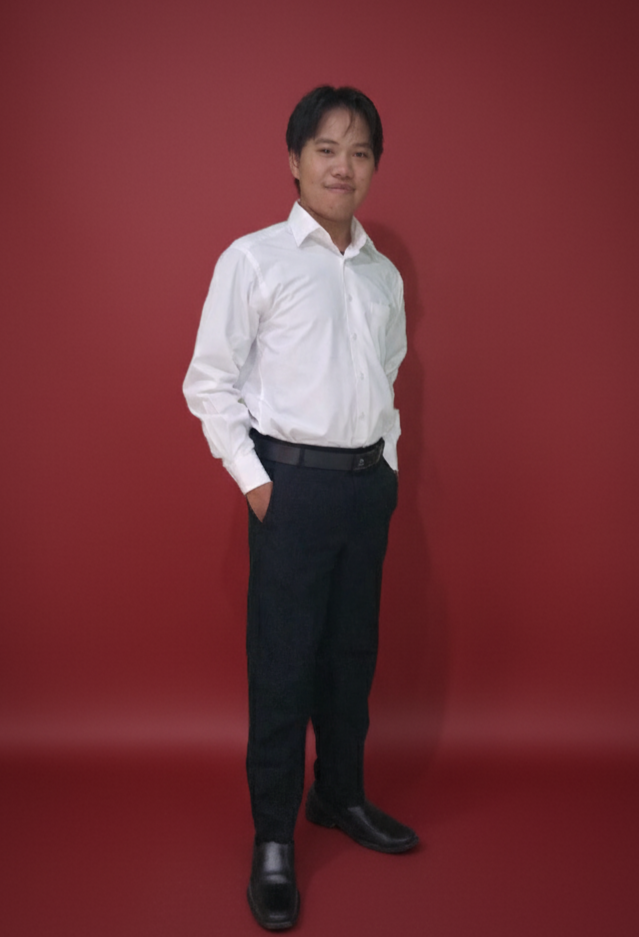
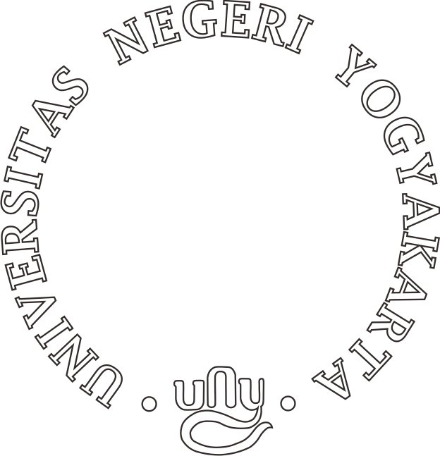
Mahasiswa PPG Prajabatan Bidang Informatika Universitas Negeri Yogyakarta. Lahir di Jakarta, besar di Lampung Utara. Memiliki ketertarikan mendalam pada dunia pendidikan dan teknologi. Percaya bahwa setiap murid berhak mendapatkan pembelajaran yang bermakna dan menyenangkan.
Yogyakarta, Indonesia
Saya menempuh pendidikan dasar hingga menengah di Lampung Utara, kemudian melanjutkan studi S1 Informatika di Universitas Teknokrat Indonesia. Selama kuliah, saya aktif dalam beberapa organisasi dan pernah mengikuti kegiatan kampus mengajar, yang menumbuhkan minat saya di bidang pendidikan. Setelah lulus, saya memutuskan untuk mengikuti Program Profesi Guru (PPG) Prajabatan agar dapat menjadi pendidik profesional yang mampu mengintegrasikan teknologi dalam pembelajaran.
Keinginan untuk menjadi guru yang tidak hanya mengajar, tetapi juga mendidik dan menginspirasi siswa menjadi alasan utama saya mengikuti PPG. Saya ingin mengubah paradigma bahwa mata pelajaran informatika itu sulit menjadi sesuatu yang seru dan dekat dengan kehidupan sehari-hari. Melalui PPG ini, saya berharap dapat memperdalam kompetensi pedagogik dan profesional sehingga kelak bisa menciptakan generasi yang melek teknologi dan berakhlak mulia.
Mengeksplorasi bahasa pemrograman baru dan membangun proyek kecil.
Mengabadikan momen melalui lensa, terutama landscape dan street photography.
Menelusuri buku-buku fiksi ilmiah dan pengembangan diri di waktu senggang.
PPL 1 · 2025
Produk dan dokumentasi rencana serta perangkat pembelajaran yang disusun selama pelaksanaan PPL 1 beserta analisis reflektifnya.
Selama proses penyusunan produk pembelajaran, beberapa kendala yang dihadapi meliputi: kesulitan menyesuaikan materi dengan kemampuan awal siswa yang beragam, keterbatasan waktu dalam merancang media interaktif berbasis teknologi, serta tantangan menyelaraskan tujuan pembelajaran dengan indikator capaian kurikulum Merdeka yang berlaku saat ini.
Penyusunan produk mengadopsi Konstruktivisme Vygotsky melalui scaffolding bertahap, Pembelajaran Berbasis Masalah (PBL) untuk mendorong berpikir kritis, serta kerangka TPACK — Technological Pedagogical Content Knowledge — dalam mengintegrasikan teknologi secara bermakna dengan konten dan pedagogi informatika.
Keberhasilan penerapan produk pembelajaran didukung oleh: pemanfaatan media digital yang menarik perhatian siswa, pendekatan pembelajaran kontekstual yang relevan dengan dunia nyata, antusiasme siswa dalam aktivitas berbasis proyek, serta iklim kelas yang kondusif dan kolaboratif selama proses pembelajaran berlangsung.
Komponen yang dapat disesuaikan untuk situasi kelas berbeda: modul dapat disederhanakan untuk kelas heterogen, media dapat dikonversi ke versi offline bagi sekolah dengan keterbatasan internet, alokasi waktu fleksibel sesuai jam pelajaran, serta tingkat kesulitan tugas dapat didiferensiasi berdasarkan kemampuan masing-masing peserta didik.
Rencana Pelaksanaan Pembelajaran · Pertemuan 1–2
Rencana Pelaksanaan Pembelajaran · Pertemuan 3–4
Rencana Pelaksanaan Pembelajaran · Pertemuan 5–6
Klik untuk memutar video
Dokumentasi video pelaksanaan praktik mengajar
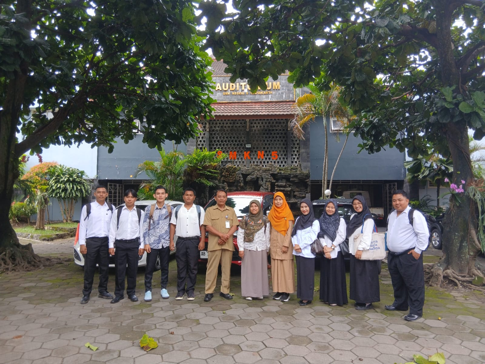
Dokumentasi Kegiatan 1
PPL 1 · 23 -2 - 2026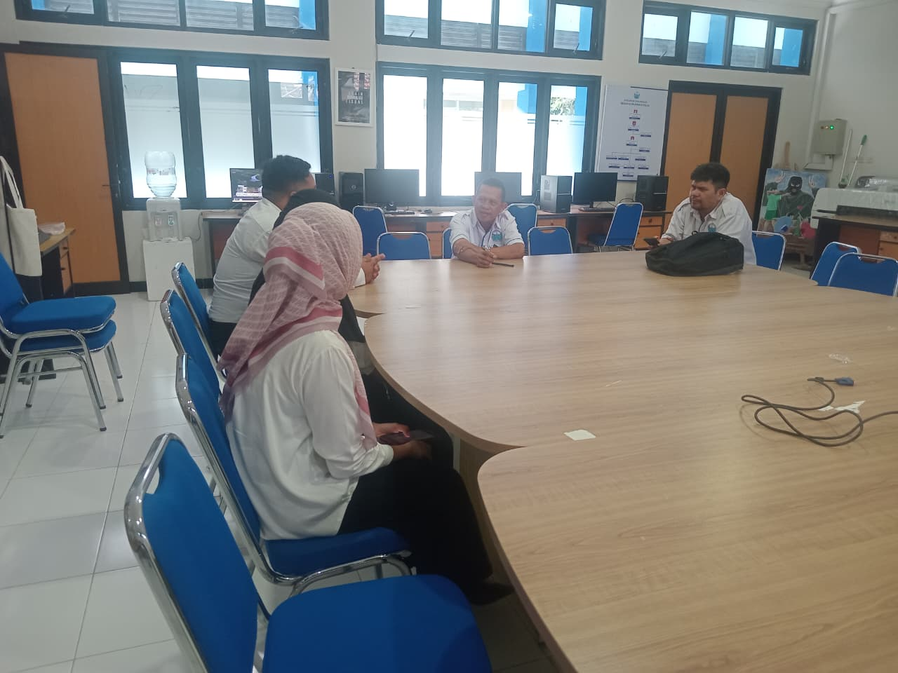
Dokumentasi Kegiatan 2
PPL 1 · 25 - 2 - 2026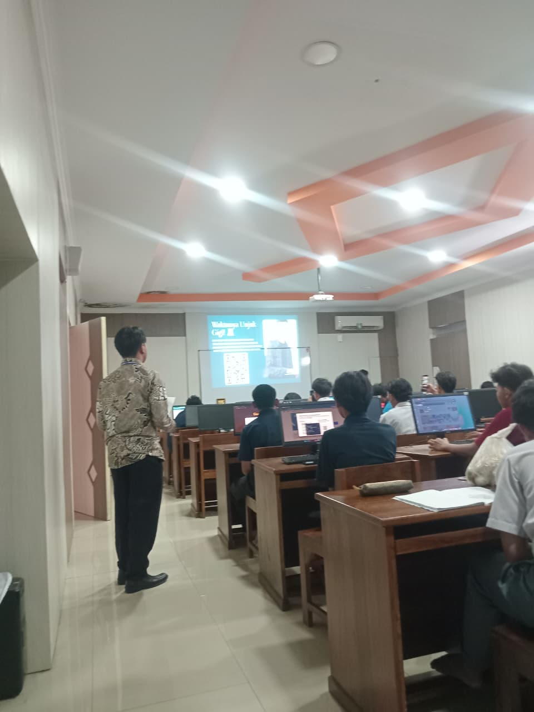
Dokumentasi Kegiatan 3
PPL 1 · 26 - 2 - 2026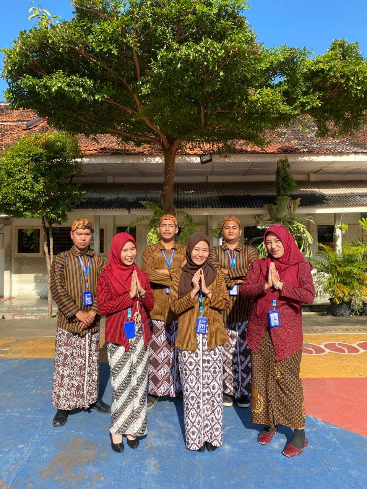
Dokumentasi Kegiatan 4
PPL 1 · 13 - 3 - 2026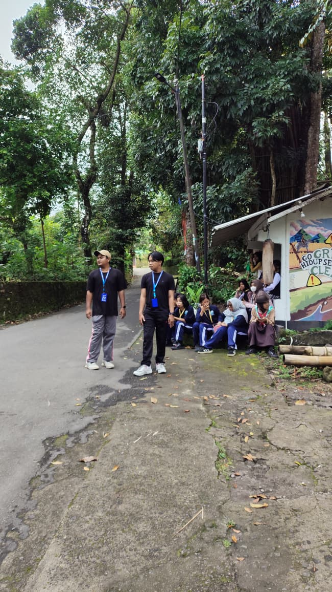
Dokumentasi Kegiatan 5
PPL 1 · 2 - 4 - 2026Evaluasi Profesional
Penilaian dari Guru Pamong (GP) dan Dosen Pembimbing Lapangan (DPL) terhadap rancangan pembelajaran dan praktik mengajar selama 3 siklus PPL.
Pertemuan ke-1 & 2
Pertemuan ke-3 & 4
Pertemuan ke-5 & 6
"Rancangan pembelajaran sudah cukup baik. Perlu peningkatan dalam pengelolaan waktu."
"Penggunaan teknologi dalam pembelajaran sudah inovatif."
"Ada peningkatan signifikan pada siklus kedua."
"Media pembelajaran semakin kreatif."
"Mahasiswa telah menunjukkan perkembangan luar biasa."
"Kompetensi pedagogis dan teknologis telah terintegrasi sangat baik."
Kompetensi Guru
Memahami karakteristik dan kebutuhan belajar setiap siswa.
Menguasai konten informatika secara mendalam dan mengikuti perkembangan teknologi.
Membangun relasi positif dengan siswa, rekan sejawat, dan komunitas sekolah.
Menjadi teladan dengan integritas tinggi dan semangat belajar sepanjang hayat.
Karakter Guru Ideal
Hadir sebagai teman belajar yang memfasilitasi pertumbuhan siswa.
Terus berinovasi dalam metode dan media pembelajaran.
Berkomitmen pada pencapaian hasil belajar optimal.
Membangun komunitas belajar bersama rekan guru, siswa, dan orang tua.
Secara konsisten merefleksikan praktik mengajar.
Memastikan setiap siswa mendapat kesempatan belajar yang setara.
Perjalanan Profesional
Menjalani Program Profesi Guru di UNY.
Menyelesaikan PPG dan mendapat sertifikat pendidik.
Mengikuti pelatihan dan program PKB.
Berkontribusi sebagai Guru Penggerak atau pengembang kurikulum.
Portofolio 2
Perjalanan Praktik Pengalaman Lapangan (PPL) 1 ini adalah masa yang paling membentuk saya sebagai calon guru. Ketika pertama kali melangkah ke kelas, saya hanya membawa teori pedagogi dari bangku kuliah dan semangat yang berkobar. Kini, saya pulang membawa lebih dari itu: pengalaman nyata, kegagalan yang mendewasakan, dan keyakinan bahwa mendidik adalah panggilan hati.
"Mengajar bukan tentang seberapa banyak murid mendengarkan, melainkan seberapa dalam mereka memahami."
Awalnya saya berpikir bahwa menguasai materi saja sudah cukup. Namun, di depan kelas saya sadar bahwa sesungguhnya kunci pembelajaran terletak pada hubungan, bagaimana saya mampu membaca kecemasan di mata murid yang belum paham, bagaimana saya merayakan keberhasilan kecil mereka, dan bagaimana saya terus belajar menjadi fasilitator yang sabar dan adaptif.
Pada siklus pertama, saya banyak melakukan kesalahan: waktu yang tidak terkelola, instruksi yang kurang jelas, dan terlalu cepat menyampaikan materi. Namun berkat bimbingan Guru Pamong dan DPL, serta refleksi yang saya lakukan setiap selesai mengajar, perlahan saya menemukan ritme yang sesuai. Saya mulai menerapkan pembelajaran berdiferensiasi, memanfaatkan media interaktif berbasis teknologi, dan memberikan ruang lebih luas bagi murid untuk bertanya dan bereksplorasi. Hasilnya, pada siklus ketiga, keterlibatan murid meningkat pesat dan mereka mampu mencapai tujuan pembelajaran dengan lebih baik.
Refleksi ini mengajarkan kepada saya bahwa seorang guru profesional bukanlah yang sempurna sejak awal, melainkan yang terus-menerus berefleksi, berinovasi, dan tidak pernah berhenti belajar. Saya akan membawa semangat ini sepanjang karier saya, selalu menempatkan murid sebagai pusat dari setiap keputusan pengajaran, dan tidak pernah lelah menjadi versi terbaik dari diri saya sendiri.
Kini, saya berkomitmen untuk terus mengasah kompetensi pedagogik, profesional, sosial, dan kepribadian. Saya ingin menjadi guru yang tidak hanya mentransfer ilmu, tetapi menumbuhkan rasa ingin tahu, membangun karakter, dan menyiapkan generasi yang siap menghadapi tantangan masa depan.
Portofolio 2
"Setiap murid adalah bintang dengan cahayanya sendiri, tugas guru bukan memaksa mereka bersinar dengan cara yang sama, melainkan membantu mereka menemukan spektrum terbaiknya."
Filosofi mengajar saya berakar pada keyakinan bahwa pendidikan sejati adalah proses memanusiakan manusia. Saya percaya bahwa setiap murid, terlepas dari latar belakang dan kemampuannya, memiliki potensi unik yang harus dihargai dan dikembangkan. Oleh karena itu, pembelajaran yang saya rancang selalu berorientasi pada kebutuhan murid, kontekstual, dan memberdayakan.
Setiap keputusan pengajaran berangkat dari pertanyaan “apa yang terbaik untuk murid saya hari ini?” Saya berusaha menciptakan lingkungan yang aman, inklusif, dan menyenangkan di mana kesalahan dianggap sebagai bagian dari belajar.
Materi informatika tidak diajarkan sebagai hafalan, melainkan dihubungkan dengan kehidupan nyata murid. Saya menggunakan proyek berbasis masalah (PBL) agar mereka langsung merasakan relevansi ilmu yang dipelajari.
Sebagai guru informatika, saya memandang teknologi bukan sekadar alat, tetapi jembatan untuk memperdalam pemahaman, kreativitas, dan kolaborasi. Penerapan kerangka TPACK menjadi panduan saya dalam memadukan teknologi, pedagogi, dan konten secara selaras.
Saya percaya bahwa guru yang baik adalah pembelajar sejati. Setiap selesai mengajar, saya menyempatkan diri untuk merenung: apa yang berhasil, apa yang bisa diperbaiki, dan bagaimana saya bisa melayani murid dengan lebih baik esok hari.
Filosofi ini bukan sekadar kata-kata di atas kertas, melainkan kompas yang saya pegang saat mengajar. Saya ingin dikenang bukan hanya sebagai pengajar yang menyampaikan materi, tetapi sebagai guru yang menyalakan api semangat belajar, yang mengajarkan nilai-nilai kemanusiaan, dan yang selalu percaya bahwa setiap murid bisa sukses dengan caranya sendiri.
Dengan berpegang pada filosofi ini, saya berkomitmen untuk terus bertumbuh, beradaptasi, dan memberikan yang terbaik bagi dunia pendidikan Indonesia.
Informasi
E‑Portofolio PPG Prajabatan UNY ini disusun sebagai dokumentasi dan refleksi perjalanan akademik selama mengikuti mata kuliah Praktik Pengalaman Lapangan 1 (PPL 1). Seluruh konten mulai dari profil mahasiswa, artefak pembelajaran, penilaian Guru Pamong dan Dosen Pembimbing, hingga model guru yang dituju merupakan bagian dari pemenuhan tugas Ujian Tengah Semester (UTS) dan Ujian Akhir Semester (UAS).
Portofolio ini dirancang sebagai wadah untuk mendemonstrasikan kompetensi pedagogik, profesional, sosial, dan kepribadian yang telah dikembangkan selama praktik mengajar di sekolah mitra. Setiap halaman merepresentasikan tahapan pengalaman nyata yang telah dilalui, dari perencanaan, pelaksanaan, evaluasi, hingga refleksi akhir.
Melalui platform digital ini, saya berharap dapat berbagi praktik baik, menginspirasi rekan sejawat, dan menjadi bagian dari transformasi pendidikan yang berpihak pada murid. Semua media, dokumen, dan foto yang ditampilkan adalah karya asli serta dokumentasi langsung dari kegiatan PPL 1.
Terhubung
Ikuti perjalanan akademik dan konten edukatif lainnya melalui kanal di atas.
Apresiasi
Puji syukur ke hadirat Tuhan Yang Maha Esa atas selesainya portofolio ini. Saya menyampaikan terima kasih sebesar‑besarnya kepada semua pihak yang telah mendukung perjalanan PPL 1 dan pembuatan e‑portofolio ini.
“Tak ada karya besar yang lahir tanpa sentuhan tangan‑tangan tulus di sekitarnya. Terima kasih telah menjadi bagian dari cerita ini.”